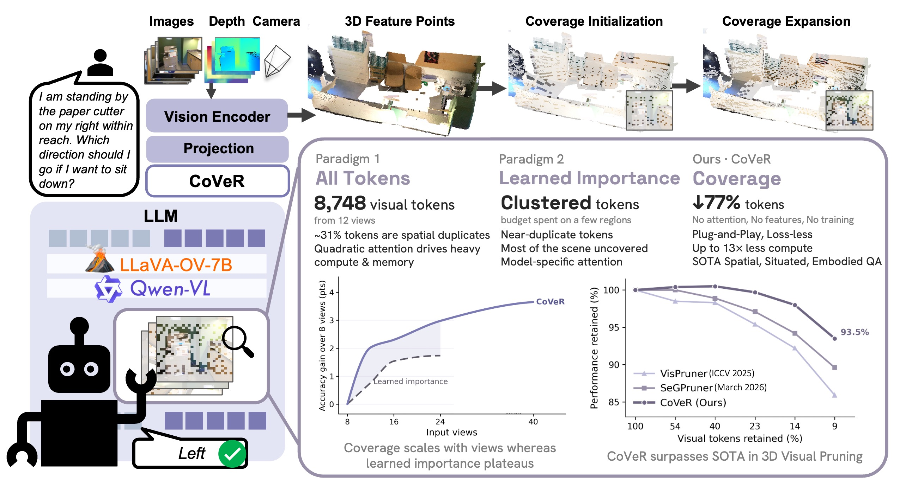
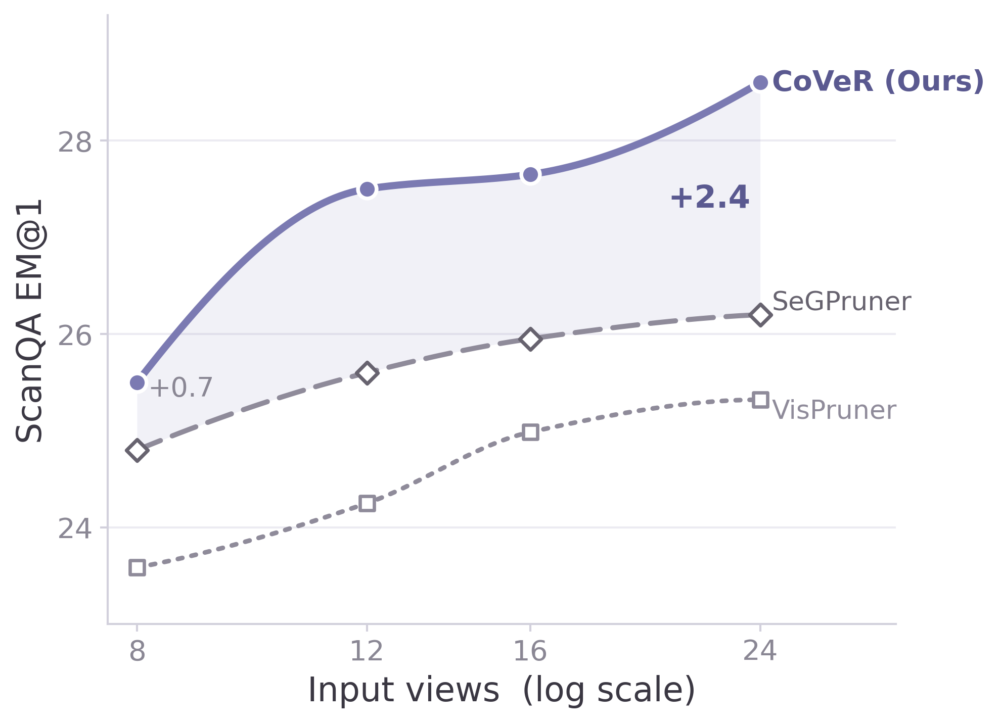
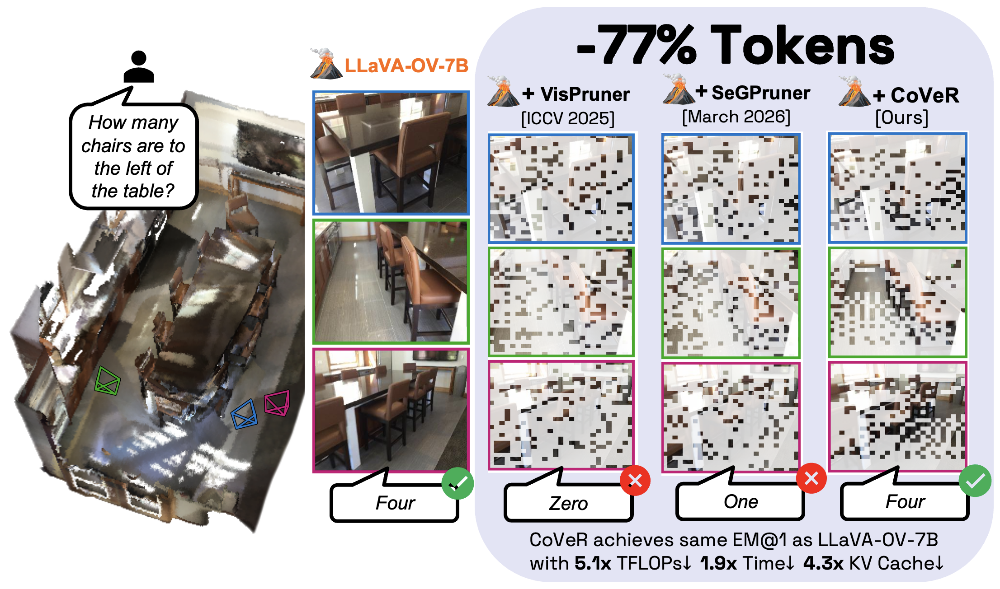

Coverage, not concentration
Rendering a 3D scene as multi-view images lets a pre-trained 2D VLM reason in 3D by reusing its visual and language priors — sidestepping the scarcity of annotated 3D data. But every added view adds visual tokens: 12 views already yield 8,748 tokens in LLaVA-OneVision-7B, and roughly 31% of them are spatial duplicates of the same physical surface seen from a different camera. Existing token pruners weren't designed for this redundancy, which is geometric, not semantic, so ranking tokens by attention or encoder features keeps near-duplicate observations of a few prominent regions and leaves the rest of the scene unrepresented.

Voxelization alone gives no exact budget
Back-projecting tokens into 3D and pooling one per occupied voxel improves coverage, but the output count is governed by voxel size, not a token budget: at a fixed resolution, 56% of scenes fall under budget and 44% overshoot it. Shrinking voxels further doesn't help either — occupancy saturates near 69% once overlapping views already share voxels, capping retention well below aggressive targets.
Learned importance clusters tokens
Attention- and feature-based rankers spend the budget on whichever regions score highest — usually a few prominent, near-duplicate views of the same object — while distinct objects and boundaries elsewhere go unrepresented. These signals are also model-specific, tied to attention maps or auxiliary features that vary across architectures.
See what CoVeR keeps (Hover over any Camera)
Results on 3D reasoning benchmarks
We evaluate all three forms of 3D reasoning with LLaVA-OneVision-7B on 12 uniformly sampled views: ScanQA (spatial scene understanding), SQA3D (situated reasoning), and OpenEQA (embodied QA). CoVeR achieves the best aggregate performance at every token budget, and the gap to prior SOTA pruners widens as the budget tightens.
| Methods | ScanQA | OpenEQA | SQA3D | Avg. | Rel. % | ||
|---|---|---|---|---|---|---|---|
| EM@1 | CIDEr | ROUGE-L | LLM-Match | EM@1 | |||
| LLaVA-OV-7B (100%) | 28.2 | 83.6 | 42.6 | 59.1 | 51.7 | 54.1 | 100.0 |
| DTC | 26.1 | – | – | – | 48.0 | – | – |
| VisPruner | 23.4 | 66.9 | 35.6 | 51.5 | 45.7 | 46.4 | 85.9 |
| SeGPruner | 24.5 | 71.2 | 37.0 | 52.5 | 48.4 | 48.4 | 89.6 |
| CoVeR (Ours) | 27.1 | 81.4 | 41.5 | 53.0 | 48.6 | 50.5 +2.1 | 93.5 |
| Methods | ScanQA | OpenEQA | SQA3D | Avg. | Rel. % | ||
|---|---|---|---|---|---|---|---|
| EM@1 | CIDEr | ROUGE-L | LLM-Match | EM@1 | |||
| LLaVA-OV-7B (100%) | 28.2 | 83.6 | 42.6 | 59.1 | 51.7 | 54.1 | 100.0 |
| DTC | 26.7 | – | – | – | – | – | – |
| VisPruner | 24.8 | 71.7 | 37.5 | 55.9 | 49.0 | 49.9 | 92.2 |
| SeGPruner | 26.4 | 75.2 | 38.9 | 56.0 | 49.7 | 50.8 | 94.2 |
| CoVeR (Ours) | 27.9 | 82.4 | 42.2 | 56.8 | 51.2 | 52.9 +2.1 | 98.0 |
| Methods | ScanQA | OpenEQA | SQA3D | Avg. | Rel. % | ||
|---|---|---|---|---|---|---|---|
| EM@1 | CIDEr | ROUGE-L | LLM-Match | EM@1 | |||
| LLaVA-OV-7B (100%) | 28.2 | 83.6 | 42.6 | 59.1 | 51.7 | 54.1 | 100.0 |
| DTC | 27.7 | – | – | – | – | – | – |
| VisPruner | 26.9 | 77.1 | 40.1 | 57.1 | 49.5 | 51.5 | 95.4 |
| SeGPruner | 27.7 | 78.9 | 40.7 | 57.5 | 50.6 | 52.4 | 97.1 |
| CoVeR (Ours) | 28.5 | 85.5 | 43.2 | 57.7 | 51.7 | 53.9 +1.5 | 99.7 |
| Methods | ScanQA | OpenEQA | SQA3D | Avg. | Rel. % | ||
|---|---|---|---|---|---|---|---|
| EM@1 | CIDEr | ROUGE-L | LLM-Match | EM@1 | |||
| LLaVA-OV-7B (100%) | 28.2 | 83.6 | 42.6 | 59.1 | 51.7 | 54.1 | 100.0 |
| DTC | 27.7 | – | – | – | – | – | – |
| VisPruner | 28.0 | 80.3 | 41.4 | 58.4 | 51.0 | 53.1 | 98.3 |
| SeGPruner | 28.2 | 81.9 | 42.0 | 58.0 | 51.5 | 53.4 | 98.9 |
| CoVeR (Ours) | 28.9 | 85.5 | 43.4 | 58.6 | 51.7 | 54.3 +0.9 | 100.5 |
EM@1 / CIDEr / ROUGE-L on ScanQA, LLM-Match on OpenEQA, EM@1 on SQA3D; Avg./Rel. computed across the three benchmarks.
🧩 Design ablations — ScanQA avg. (EM@1, CIDEr, ROUGE-L) at 9% tokens
⚡ Efficiency — ScanQA, 9% retention, 1×H100
At the same 9% budget, CoVeR also cuts LLM TFLOPs by 13.3× and KV cache by 10.7× versus full tokens, with a 2.9× inference speedup — for a pruning cost of just 0.034s per scene, computed entirely from 3D coordinates.

How CoVeR compares
Prior pruners fall into two families. Voxelization methods cover space but can't hit an exact per-scene budget; learned-importance methods lean on attention or encoder features and spend the budget on near-duplicates. CoVeR is the only approach that is geometry-only and guarantees an exact budget on every scene.
| Property | Voxelization | Learned Importance | CoVeR | |||
|---|---|---|---|---|---|---|
| VTC | DTC | VisPruner | SeGPruner | Geo3DPruner | ||
| Attention-free | ✓ | ✓ | ✗ | ✗ | ✗ | ✓ |
| Visual-feature-free | ✓ | ✗ | ✗ | ✗ | ✗ | ✓ |
| Auxiliary-encoder-free | ✓ | ✓ | ✓ | ✓ | ✗ | ✓ |
| Training-free | ✓ | ✓ | ✓ | ✓ | ✗ | ✓ |
| Deterministic | ✓ | ✗ | ✓ | ✓ | ✓ | ✓ |
| Exact per-scene budget | ✗ | ✗ | ✓ | ✓ | ✓ | ✓ |
Only CoVeR satisfies every property: purely geometric selection with a guaranteed exact token budget on every scene.
Two geometry-only stages
CoVeR selects a token subset C of exact budget B that minimizes the directed Hausdorff distance from every token location X to the retained set. A small value ensures that no region of the scene is dropped outright, which is precisely the guarantee learned importance never offers. CoVeR reaches this objective in two complementary, training-free stages using only backprojected 3D token coordinates — no attention, features, or auxiliary encoder.
Coverage Initialization
A per-scene voxel size v_s is searched to target B_init occupied voxels. Keeping the centroid-nearest token per voxel removes cross-view duplicates while preserving spatial coverage.
Coverage Expansion
FPS repeatedly adds the token farthest from the selected set, prioritizing the least-covered regions until exactly B tokens are selected. This ensures spatial information beyond the voxelization limit.
Exact Budget Guarantee
Because stage 2 supplies whatever stage 1 doesn't, CoVeR returns exactly B tokens on every scene — a guarantee no voxelization baseline provides.
# Input: token coords X = {t_i}, budget B, split ratio α
# Output: selected set C, |C| = B
B_init ← max(1, ⌊α·B⌋)
# Stage 1 — Coverage Initialization
v_s ← heuristic interval search(lower_bound, higher_bound) s.t. |voxels(X, v_s)| ≈ B_init
C_init ← nearest-to-centroid token per occupied voxel
# Stage 2 — Coverage Expansion
C ← C_init
repeat B − |C_init| times:
m* ← argmax_{m∉C} min_{s∈C} ‖t_m − t_s‖²
C ← C ∪ {m*} # add the least-covered token
return C # |C| = B, exactlyPlug-and-play across VLMs
Because CoVeR needs no training and no architectural changes, the same geometry-only selector drops into different backbones unchanged. We test it across four VLMs — LLaVA-OneVision-7B, Video-3D LLM, Qwen2.5-VL-7B, and Qwen3-VL-8B.
| Method | Encoder | Retrain | ScanQA (EM@1) | SQA3D (EM@1) | Rel. % |
|---|---|---|---|---|---|
| Geo3DPruner | VGGT-1B | Full | 26.0 | 55.7 | 90.7 |
| CoVeR (Ours) | None | None | 26.5 | 55.1 | 93.5 |
Video-3D LLM backbone, 16 views at a 10% token budget. Geo3DPruner adds a VGGT-1B encoder and retrains the whole backbone; CoVeR adds neither and still comes out ahead on retained performance.
Why coverage wins

BibTeX
@article{bui2026cover,
title = {CoVeR: Coverage-Based Token Pruning for Multi-View 3D Reasoning in VLMs},
author = {Bui, Nhat-Tan and Elangovan, Varshini and Anugu, Arun Reddy and Mohan, Sreyas and Ye, Wei and
Wang, Dilin and Huang, JQ and Ranjan, Rakesh and Chharia, Aviral and De la Torre, Fernando},
journal = {arXiv preprint},
year = {2026}
}